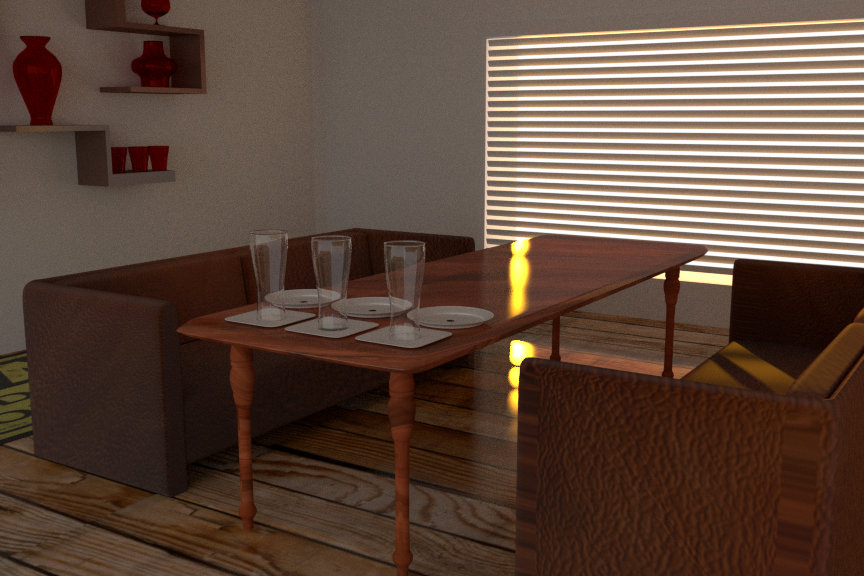
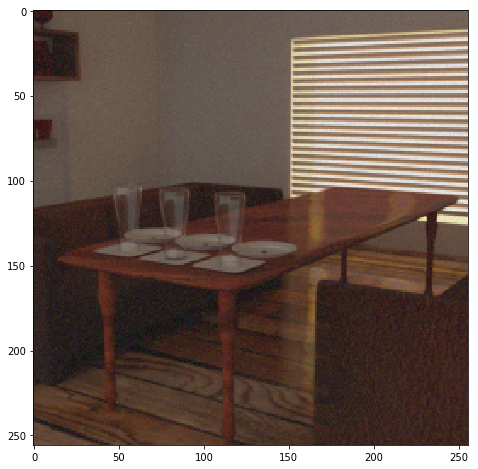
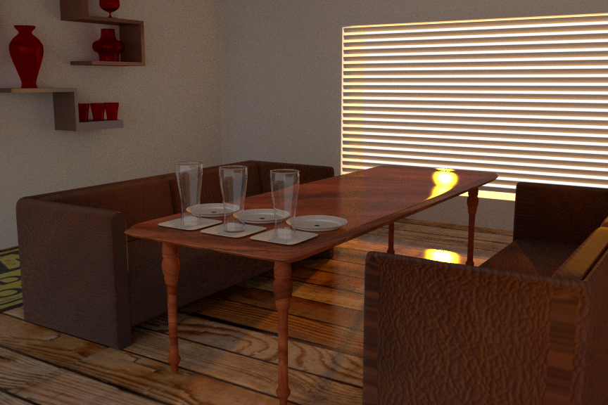

Abstract
It’s difficult for photographers to relight their photographs after they’ve been taken. For example, a photo taken during sunset can not be altered to a sunrise setting easily. Our project tries to address this problem using a pixel-based approach described in Image Based Relighting Using Neural Networks. In addition to this approach, we also compare the pixel-based approach with different approaches such as fully connected feedforward neural networks and Deep Convolutional Generative Adversarial Networks. The results on single scenes are remarkable with some acceptable artifacts. Although the fully connected networks failed to generalize within the same scene, we believe the pixel based approach generalized across different lighting settings for the same scene.
Technical approach
The pixel-based approach from the paper is rather straightforward to understand and implement. As suggested by the paper, we created a simple 4 layer feedforward neural network with 16 nodes in the hidden layers as our model. The trained model is the representation of the light transport matrix which maps lighting conditions to pixel RGB/grayscale values. The intuition behind the paper is that the light transport matrix is non-linear which can be modeled easily by neural networks. At a high level the network takes in the light’s coordinates, pixel coordinates, and the average pixels color from the training set and predicts output pixel color. We used the hyperbolic tangent as our activation layer but found that ReLU was better at predicting hard shadows, so we decided to use ReLU activation in the hidden layers while maintaining the benefit of hyperbolic tangent’s ability to map values to [-1,1] for the output. Then, we normalized the pixel value, pixel and light coordinates to be [-1,1] to avoid covariate shift. We then trained the network with 200 epochs with the gradient updated after every batch.

Although this basic pixel-based approach is remarkable at learning the mapping between the inputs and the pixel values, it takes a long time to train a good model. For speeding up the learning, we implemented the adaptive clustering algorithm suggested by the paper. The idea of adaptive clustering is similar to the mipmapping idea in the way that a level of granularity is chosen for each pixel. The algorithm is as follows: First the pixel is trained with the coarsest resolution using an ensemble of neural networks. It calculates the average loss from the ensemble and decides whether to go to a deeper level by checking if relative loss is bigger than a threshold (0.03 is chosen and suggested by the paper). If it is the case, the pixel will be trained with the ensemble neural networks with higher granularity. This procedure continues until either the lowest level has been reached or the relative error is below the threshold. Note that the networks are updated before going to a deeper level. More detail can be found below.
In addition to the training procedure, we built a nearest neighbor model to map the pixel coordinate to the nearest n clusters and use these n clusters as the ensemble neural networks of the pixel. Following from the paper, we calculated the number of clusters in the finest-grained level as below:
num_weights = 5 * 16 + 16 * 16 + 16 * 16 + 16 # add up weights
num_images = 120 # training set
num_pixels = im_size * im_size # pixels per image
lv0_num_clus = int(num_pixels / 25 * num_weights / num_images)
lv1_num_clus = lv0_num_clus / 4
lvn_num_clus = lv(n-1)_num_clus / 4
With the known number of clusters, we then randomly sampled the uniform square to map them into pixel coordinates. We found that training converged much quicker when using this technique. A clear comparison is shown below.
In addition, it turns out that a good threshold value is dependent on the complexity of the scene. With a high value of threshold e.g. 0.03 for simple scenes such as the cube, the model tends to use the coarser level of neural networks to predict the pixel value because the lighting dynamics can be easily learned. Although it minimizes the number of networks required for training, it reduces the benefit the model can get from finer levels of neural networks such as predicting specular highlights in small areas.
The pixel-based approach mentioned in the paper is not ideal for data parallelization, thus the GPU is hardly utilized completely during training. If we assume that the time complexity of running a batch of pixels (at the same pixel coordinate) requires O(N). Running the whole training on the dataset requires O(width*width*N*epochs*num_batch), which is significantly high for any real-time rendering. Given the non-ideal situation, we tried to accelerate our pixel-based model by running it with multiple processes and ONNX. The multiple processes approach immediately falls short because of the overheads of spawning new processes such as the copied memory and the scheduling management. We then tried to use Open Neural Network Exchange (ONNX) hoping to leverage some of its optimization techniques, but it does not improve the performance significantly. Both notebooks are available in the repo.
In order to compare the pixel based approach to other methods, we next attempted to utilize Deep Convolutional Generative Adversarial Networks (DCGANs) [paper]. These trainable models have seen success in generating natural images through the clever use of two networks, a generator and discriminator, that simultaneously try to generate and discern between real and fake images. To better exploit the 2-dimensional data (per channel) in images, we used convolutional neural networks, consisting of learnable 2D filters which are convolved with input images to produce further activation maps.
To attempt relighting a scene with DCGANs, we first trained the architecture to merely recreate data from the dataset. As we train, the generator network improves its ability to generate fake images of the scene, while the discriminator gets better at determining fake from real. The model is trained in the unsupervised setting, not requiring a label. However, to control the light, we needed a way to either condition the model on the light’s coordinates or inform it in some other way of our desired lighting. In the general case, to allow the generator to capture a wide distribution of images in the training set, a large latent space vector z is used consisting of 100 randomly generated numbers which are then reshaped and convolved into the final image. In our case, knowing the distribution of images ultimately arose from just two parameters, the x and y coordinates of the single point light in the plane, we chose to make z 2-dimensional. We then explored the latent space by trying different values of the z vector. Incredibly, the dimensions of z came to represent the x and y coordinates of the light. You can see below that as we explore the latent space of images the high dimensional output follows naturally.
|
|
|
One issue we faced while using GANs was a large amount of noise in our resulting images. To determine if this was due to the generator and discriminator architectures or the GANs themselves we swapped out the convolutional neural networks with fully connected networks in both the generator and the discriminator. Unfortunately this led to a well known issue known as “mode collapse” where the generator network continually stays one step ahead of the discriminator. The generator eventually produces the same small subset of images repeatedly.
Taking a different approach to reduce noise, we then tried a simple fully connected neural network, whose inputs are the x, y coordinates of the light and outputs are a vector of size image width * image height * num_channels. Training consisted of reducing the mean squared error (MSE) of the generated output and target image, which amounts to reducing the squared difference of output pixel values to target values. Reshaping the output and displaying it as an image reveals near noiseless reconstruction. On images with complex shadows or interesting textures the results looked promising.
|
|
|
|
|
|
To determine if this method was generalizing across lighting conditions we then tested it on a difficult indoor scene using a reduced dataset with many missing images. Unfortunately, the model failed to generalize between lighting conditions and instead began predicting the mean image which is a common failure case of using a mean squared error function.
|

|

|

|
To address this problem we used a different loss, known as the Structural SIMilarity (SSIM) index, which fortunately is a differentiable measure of image similarity. Multiple images can have the same MSE when compared to ground truth and yet contain large amounts of noise, blurriness or artifacts, something that SSIM captures. Using SSIM alone produced a realistic image, with some strange artifacts.
To address those we then combined SSIM and MSE with even weighting as our new objective function. This reduced the artifacts but reintroduced the original issue of an architecture unresponsive to network inputs, instead predicting nearly the same image each time. We also projected the latent space into a 64 dimensional one consisiting of high frequency signal as we changed light coordinates.
Results
|
|
|
|
|
|
|
|
|
Our model generates realistic lighting with acceptable artifacts. Note that the shadow the model generated is not perfect, and we believe adaptive clustering could help reducing the noise. Given the time and resource constraints of the project, we did not train a model with adaptive clustering in high resolution because it becomes infeasible to test and tune the model. We expect the training would take 4-5 days for a 256x256 image. Overall, we were surprised that a complex scene can be easily captured by a simple neural network, and this observation could lead to a further project focusing on image compression using neural network. By combining the strengths of the pixel based method in learning actual light transfer dynamics of the scene with generative adversarial networks ability to capture the full distribution of training images, we believe a stronger image relighting architecture could be created.
Future Work
As suggested by Ben Mildenhall, network-based approach relighting tends to suffer from spectral bias, which causes the failure of capturing high frequency specular light. In the future, we would like to add sinusoidal waves as a pass to the inputs of the neural network to map lower dimension inputs to higher dimension in order to capture the high frequency light. In addition, we'd like to try larger filters in our convolutional networks in the GAN to reduce image noise.
Resources
Image based relighting using neural networks | ACM Transactions on GraphicsSingle Image Portrait Relighting
Hands-On Generative Adversarial Networks with PyTorch
CGAN Code
PyTorch-GAN: Collection of GAN variants
Contribution
Billy Chau: Wrote the script to generate the dataset using blender; implemented and tuned the pixel-based model from the paper in Pytorch, including the adaptive clustering enhancement; tried to accelerate the Pytorch model by running multi-processes and ONNX. Contributed to the writeup, recorded audio for slides and worked on slideshow presentation.
Jon Como: Implemented deep convolutional generative adversarial network and fully connected network. Explored different architectures in the DCGAN and different loss functions including structural similarity index based on the human visual system. Contributed to the writeup, recorded and edited the video presentation and created presentation slides.